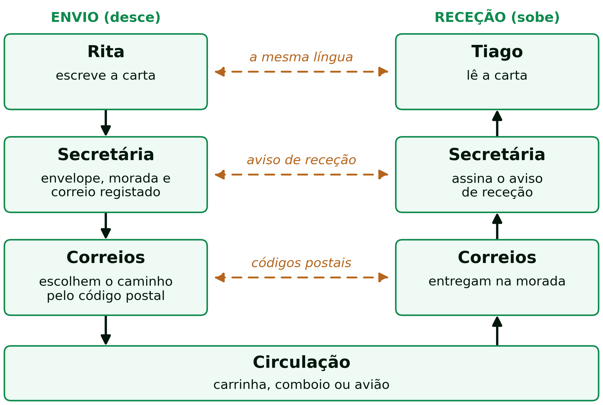
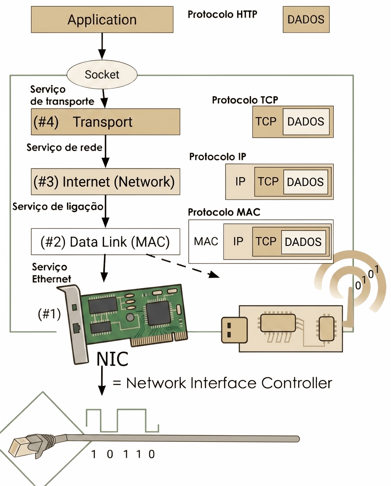
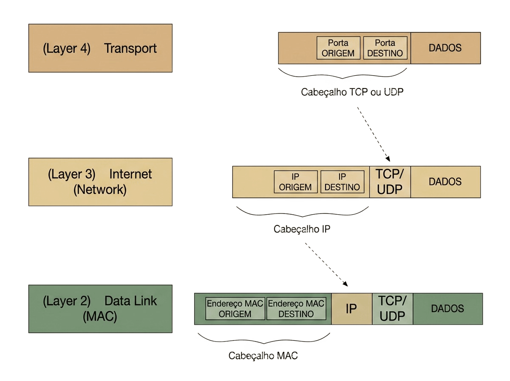
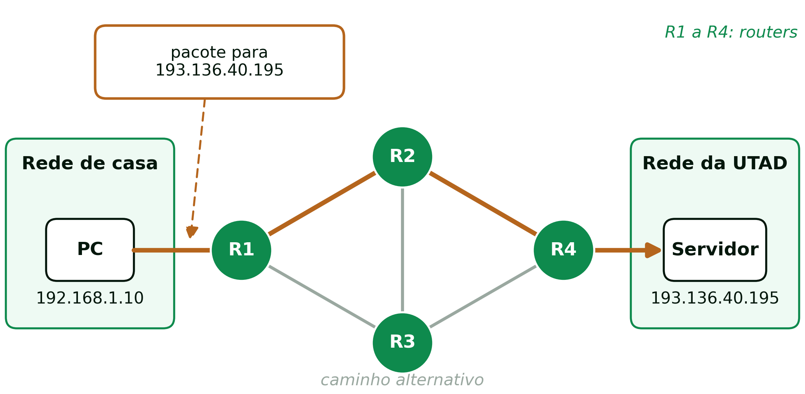
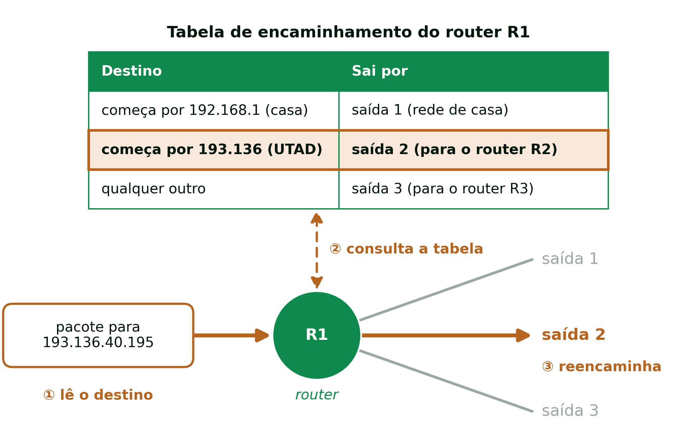
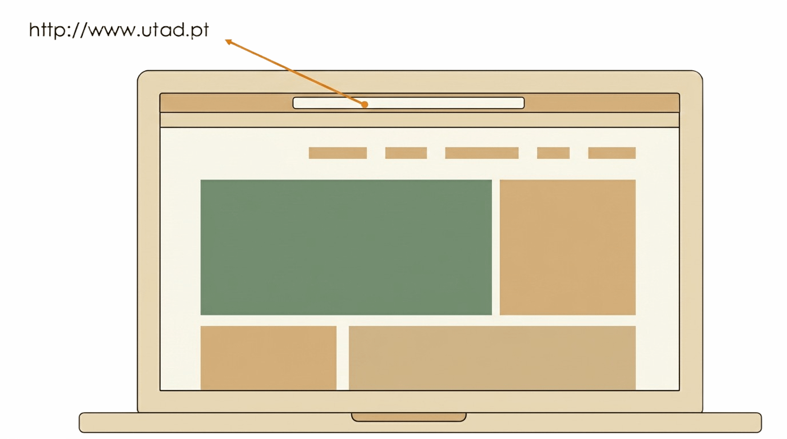
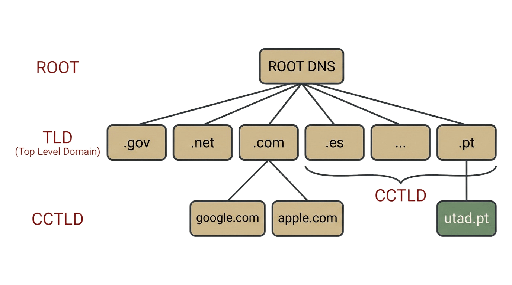

6 Modelos de Comunicação e Redes
Modelos de Comunicação e Redes
6.1 Do PHP à Rede
Enquanto desenvolve o site da Contraponto, o Tiago trabalha só do lado do servidor: guarda o catálogo de artigos num array, filtra-o por categoria com um if dentro de um foreach e junta a todas as páginas o mesmo cabeçalho e o mesmo rodapé com include. Testa tudo em localhost, ou seja, com o browser e o servidor no mesmo computador.
A Rita, diretora da revista, faz então uma pergunta simples: «Quando um leitor em Bragança escrever o endereço da Contraponto, como é que a página lhe chega?». Já se sabe que o browser envia um pedido e que o servidor devolve HTML. Este capítulo trata do que acontece entre os dois.
6.2 O que Ganha um Programador Web em Perceber a Rede?
Há três razões para um programador web perceber o caminho que cada pedido percorre:
- O PHP só chega ao leitor pela rede. O código pode estar certo, mas a página só aparece se o pedido chegar ao servidor e a resposta voltar.
- Para perceber os erros. «Não foi possível encontrar o servidor» é um problema de nomes. «Ligação recusada» é um problema de porta. Nenhum dos dois é um erro de PHP: saber onde está o problema evita procurá-lo no sítio errado.
- Para publicar o site. Pôr a Contraponto online exige um nome de domínio, um endereço IP e as portas 80 e 443.
Quando a Rita ligar a dizer «o site não abre», o Tiago tem de saber responder: o problema está no PHP ou no caminho até ao servidor?
6.3 Porque Organizar a Comunicação em Camadas?
Para que um pedido do browser chegue ao servidor da Contraponto, são precisas várias operações, cada uma feita por uma parte diferente do sistema. Por exemplo:
- Encontrar o servidor: descobrir o endereço a partir do nome (resolução de nomes);
- Garantir uma ligação fiável: confirmar que nada se perde e que tudo chega pela ordem certa;
- Determinar o caminho: escolher por onde os dados passam, de rede em rede (encaminhamento);
- Converter os dados em sinais: elétricos, luz ou rádio, a cargo da placa de rede.
Só a primeira começa no browser. As outras são feitas pelo sistema operativo, pelos routers e pela placa de rede. Fica então uma pergunta: como é que equipamentos de fabricantes diferentes, espalhados pelo mundo, fazem estas operações todos da mesma maneira?
6.3.1 O que é um Protocolo?
A resposta está nos protocolos. Um protocolo é um conjunto de regras acordadas entre dois dispositivos que comunicam à distância. Define:
- o formato das mensagens;
- a ordem em que são trocadas;
- o que fazer quando algo corre mal.
Funciona como um contrato entre os dois dispositivos.
Nenhum protocolo resolve sozinho todo o envio de uma mensagem. Usam-se vários, cada um responsável por uma das operações acima, empilhados uns sobre os outros: os de cima usam os de baixo. A este conjunto chama-se pilha protocolar (protocol stack). Cada nível desta pilha chama-se camada; daí o nome arquitetura em camadas. Cada camada usa os serviços da camada inferior e oferece os seus serviços à camada superior.
6.3.2 Exemplo: as Camadas no Envio de uma Carta
O envio de uma carta pelo correio está organizado da mesma maneira. A Rita quer enviar uma carta ao Tiago. Escreve-a e entrega-a à secretária, que a mete num envelope, escreve a morada e a envia em correio registado, com aviso de receção. Os Correios escolhem o caminho pelo código postal, e a carta viaja de carrinha, de comboio ou de avião. Do lado do Tiago, o percurso faz-se ao contrário: os Correios entregam a carta na morada, a secretária do Tiago assina o aviso de receção e entrega-lhe a carta, e o Tiago lê-a (Figura 6.1).

Neste exemplo, cada camada faz uma das quatro operações descritas acima:
- Encontrar o servidor: equivale a Rita procurar a morada do Tiago na agenda;
- Ligação fiável: equivale a secretária pedir aviso de receção e, se este não chegar, enviar a carta outra vez;
- Caminho: os Correios escolhem-no usando mapas e códigos postais;
- Sinais: a circulação propriamente dita; a carrinha, o comboio ou o avião levam a carta de um ponto ao outro.
A Rita não sabe se a carta foi de carrinha ou de avião, e o motorista nunca a lê. Se os Correios trocarem a carrinha por um drone, nem a Rita, nem as secretárias, nem o Tiago têm nada a ver com isso. É esta independência que dá valor às camadas: cada camada pode ser melhorada ou substituída sem mexer nas outras, desde que continue a prestar o mesmo serviço à camada de cima.
6.3.3 Serviço e Protocolo
A figura da carta mostra dois tipos de relação, que convém distinguir:
- Protocolo: regras entre a mesma camada em dois dispositivos diferentes (as chamadas camadas pares). As duas camadas pares seguem as mesmas regras e entendem-se à distância. Na Figura 6.2, são as setas horizontais.
- Serviço: o que uma camada oferece à camada imediatamente acima, dentro do mesmo dispositivo. A camada de cima usa esse serviço sem precisar de saber como funciona por dentro. Na Figura 6.2, são as setas verticais.
Em resumo, um protocolo tem uma ação remota e um serviço tem uma ação local. Na carta, a secretária da Rita usa o serviço dos Correios: entrega-lhes a carta e não quer saber como chega. Mas segue um protocolo com a secretária do Tiago, sem nunca falar com ela: pede aviso de receção, e a outra sabe que tem de o assinar e devolver, porque é essa a regra combinada.

6.4 Os Dois Modelos: OSI e TCP/IP
Historicamente, surgiram dois modelos de referência para organizar a comunicação em camadas, com origens diferentes.
6.4.1 O Modelo OSI
O modelo OSI (Open Systems Interconnection) é um modelo formal com sete camadas, criado pela ISO (International Organization for Standardization), o organismo internacional de normalização. De cima (7) para baixo (1):
- Aplicação (7): onde trabalham os protocolos que os programas do utilizador usam (HTTP, SMTP, FTP);
- Apresentação (6): põe os dados num formato que os dois lados entendem (codificação, compressão, cifragem);
- Sessão (5): abre, mantém e fecha a conversa entre os dois lados;
- Transporte (4): entrega os dados ao programa certo, com ou sem garantia de entrega (TCP, UDP);
- Rede (3): escolhe o caminho entre redes diferentes (IP);
- Ligação de Dados (2): entrega os dados a outro equipamento da mesma rede local (Ethernet, Wi-Fi);
- Física (1): transforma os bits em sinais elétricos, luz ou rádio.
O OSI é um padrão de jure (do latim, «por lei»): foi definido formalmente por um organismo de normalização antes de estar em uso generalizado.
6.4.2 O Modelo TCP/IP
O modelo TCP/IP nasceu da prática, na ARPANET, a rede criada nos anos 60 pelo Departamento de Defesa dos EUA que deu origem à Internet. É mais simples do que o OSI: tem só quatro camadas.
- Aplicação: os protocolos que os programas usam diretamente (HTTP, SMTP, FTP, DNS);
- Transporte: entrega os dados ao programa certo no computador remoto, usando o protocolo TCP (Transmission Control Protocol), que confirma que todos os dados enviados chegam ao destino, ou o UDP (User Datagram Protocol), mais rápido, mas sem essa confirmação;
- Rede (ou Internet): encaminha os dados entre redes diferentes, com o protocolo IP (Internet Protocol). Chama-se «Internet» porque é a camada que liga as redes entre si (o nome vem de internetwork, interligação de redes);
- Acesso à Rede: entrega os dados na rede local e transmite-os no meio físico (Ethernet, Wi-Fi).
O TCP/IP é um padrão de facto («na prática»): impôs-se pelo uso generalizado, antes de qualquer normalização formal. É o modelo que a Internet usa.
6.4.3 OSI e TCP/IP Lado a Lado
A Tabela 6.1 resume as diferenças entre os dois modelos.
| Modelo OSI | Modelo TCP/IP | |
|---|---|---|
| Camadas | 7 | 4 |
| Origem | ISO, organismo de normalização | ARPANET, nasceu da prática |
| Tipo de padrão | de jure | de facto |
| Uso hoje | referência e ensino | é o que a Internet usa |
A Figura 6.3 mostra a correspondência: as três camadas de cima do OSI juntam-se na camada de Aplicação do TCP/IP, e as duas de baixo no Acesso à Rede. O OSI continua a ser ensinado porque separa melhor as responsabilidades de cada camada. A um programador web interessam sobretudo três camadas do TCP/IP: a de aplicação, onde trabalha o HTTP; a de transporte, com o TCP; e a de rede, com o IP.

Para ver que outros protocolos reais correm em cada camada, e o formalismo mais preciso por trás da distinção entre serviço e protocolo, ver a Secção D.2 e a Secção D.3.
6.5 O Percurso dos Dados: Encapsulamento
A Figura 6.4 mostra o caminho que os dados de um pedido percorrem dentro do computador, de cima para baixo:
- O browser (o retângulo DADOS) traduz os seus pedidos (por exemplo, o de uma página) numa mensagem de texto, de acordo com as regras de um protocolo chamado HTTP;
- Entrega essa mensagem ao socket: o ponto de ligação entre o programa e as camadas de baixo;
- A mensagem desce as camadas de transporte, rede e ligação, e cada uma acrescenta um cabeçalho com a sua informação, de acordo com as regras do seu protocolo;
- Chega à placa de rede (NIC, Network Interface Controller), que a converte em sinais elétricos ou de rádio.

Não confundir a camada de aplicação (uma camada do modelo TCP/IP) com a aplicação (o programa que o utilizador usa, como o browser).
Ao descer, cada camada acrescenta aos dados um cabeçalho: um bloco com a informação de que a camada par, no outro dispositivo, vai precisar para fazer o seu trabalho. A este processo chama-se encapsulamento:
- Camada de Aplicação: produz os dados (a mensagem HTTP);
- Camada de Transporte: acrescenta o cabeçalho TCP, com o número das portas, que identificam o programa que envia e o que recebe os dados;
- Camada de Rede: acrescenta o cabeçalho IP, com os endereços IP, que identificam o computador;
- Camada de Acesso à Rede:
- Subcamada de Ligação: acrescenta o cabeçalho MAC, com os endereços MAC, que identificam a placa de rede;
- Subcamada Física: converte tudo em sinais elétricos, óticos ou de rádio.
No recetor, cada camada retira e processa o seu cabeçalho, pela ordem inversa. É como uma carta metida num envelope, que vai dentro de outro envelope, e esse dentro de outro: cada camada põe o seu envelope, com a sua morada, e no destino os envelopes abrem-se pela ordem inversa.

6.5.1 A Camada de Transporte: TCP e Portas
A camada de transporte recebe a mensagem HTTP através do socket e acrescenta-lhe um cabeçalho TCP com duas portas:
- porta de origem: identifica o programa que envia (por exemplo, a porta 52344, escolhida pelo sistema operativo para o browser);
- porta de destino: identifica o programa que recebe (a porta 80, a do servidor web).
Uma porta é um número entre 0 e 65535 que identifica um programa dentro do computador, e não o computador.
Para garantir que tudo chega, o TCP:
- Divide a mensagem em pedaços numerados, chamados segmentos, rotula-os com os seus cabeçalhos e envia-os para a camada de rede;
- Do outro lado, a camada de transporte do recetor confirma cada segmento que recebe;
- O que não for confirmado dentro de um determinado período de tempo é enviado outra vez;
- No destino, os segmentos são reordenados pelo número, porque podem chegar fora de ordem, dependendo do caminho seguido pela rede.
As portas de 0 a 1023, chamadas well-known ports, estão reservadas a serviços conhecidos. Assim, qualquer browser sabe, sem perguntar, em que porta encontra um servidor web. A Tabela 6.2 mostra algumas das mais usadas.
| Porta | Protocolo | Serviço |
|---|---|---|
| 80 | HTTP | Páginas web |
| 443 | HTTPS | Páginas web cifradas (o cadeado no browser) |
| 21 | FTP | Transferência de ficheiros |
| 25 | SMTP | Envio de correio eletrónico |
| 53 | DNS | Tradução de nomes em endereços |
Quando o endereço escrito no browser não indica a porta, usa-se a porta do protocolo: http://www.utad.pt é o mesmo que http://www.utad.pt:80.
A estrutura exata do cabeçalho TCP, e os mecanismos que garantem a fiabilidade, são aprofundados na Secção D.4.1.
6.5.2 A Camada de Rede: Endereços IP
A camada de rede acrescenta um cabeçalho IP com os endereços IP de origem e de destino. Um endereço IP identifica um computador, mesmo que esteja numa rede diferente.
- IPv4: quatro números de 0 a 255, separados por pontos, como em
192.168.24.36; - IPv6: a versão mais recente, criada porque os endereços IPv4 (cerca de 4300 milhões) se esgotaram. Escreve-se em grupos separados por dois pontos, como em
2001:db8::1.
Um computador tem um endereço IP por cada placa de rede. Um portátil ligado por Wi-Fi e por cabo tem dois.
A estrutura completa do cabeçalho IP é aprofundada na Secção D.4.2.
6.5.3 A Camada de Ligação: Ethernet e Endereços MAC
A camada de ligação entrega o pacote a uma máquina na mesma rede local, acrescentando os endereços MAC (Medium Access Control) de origem e de destino e formando uma trama (frame), tipicamente segundo a norma IEEE 802.3 (Ethernet) ou a equivalente para Wi-Fi. O endereço MAC:
- tem o formato
XX:XX:XX:XX:XX:XX, como em00:1A:2B:3C:4D:5E; - é atribuído pelo fabricante da placa de rede;
- foi pensado para ser único em todo o mundo;
- só é válido dentro da mesma rede local.
Por privacidade, muitos telemóveis e computadores recentes não mostram à rede Wi-Fi o endereço do fabricante, mas um endereço MAC privado, gerado pelo próprio dispositivo e diferente em cada rede. É o caso do iPhone da Figura 6.6.
A estrutura completa de uma trama Ethernet é aprofundada na Secção D.4.3.
6.5.4 O Meio Físico
Por fim, na camada física, os bits são convertidos em sinais elétricos, impulsos de luz (fibra ótica) ou ondas de rádio (Wi-Fi), e transmitidos pelo canal físico correspondente. Do lado do recetor, o processo acontece ao contrário, camada a camada, até restarem apenas os dados originais da aplicação. O percurso completo, nos dois sentidos, é aprofundado na Secção D.5 e na Secção D.6.
6.5.5 Os Três Níveis de Endereçamento
Duas aplicações comunicam através de três endereços, cada um a identificar algo diferente (Tabela 6.3).
| Camada | Protocolo | Origem e destino | Identifica |
|---|---|---|---|
| Transporte | TCP | portas das aplicações | a aplicação |
| Rede | IP | IPs dos computadores | o computador |
| Ligação | Ethernet | endereços MAC | a placa de rede |
Se faltar qualquer um destes três endereços, a comunicação não se completa.
Estes endereços não são abstrações teóricas: qualquer dispositivo ligado a uma rede tem um endereço MAC e um endereço IP, visíveis nas definições de rede. A Figura 6.6 mostra as definições de Wi-Fi de um iPhone ligado à rede eduroam:
- Endereço Wi-Fi: o endereço MAC, neste caso um endereço privado;
- Endereço IP:
192.168.155.39; - Máscara de sub-rede: indica que parte do endereço IP identifica a rede local e que parte identifica o dispositivo dentro dela;
- Router:
192.168.155.254, o equipamento para onde o iPhone envia tudo o que se destina a outras redes.
O endereço IP foi atribuído automaticamente pela rede, através do protocolo DHCP (Dynamic Host Configuration Protocol), sem que o utilizador tivesse de o configurar.

6.6 Encaminhamento (Routing)
A Internet é uma rede de redes, ligadas por routers. É essa ligação entre redes que permite, por exemplo, que um leitor da Contraponto, a partir de casa, chegue ao servidor da revista, que está numa rede completamente diferente.
Convém distinguir duas tarefas:
- Encaminhamento (routing): a escolha do caminho que o pacote segue, rede a rede, até ao destino (Figura 6.7);
- Reencaminhamento (forwarding): o que cada router faz a cada pacote que chega (Figura 6.8).

Para reencaminhar um pacote, um router:
- Lê o endereço IP de destino do pacote;
- Consulta a sua tabela de encaminhamento (routing table), com regras que associam cada destino possível à saída por onde o pacote deve seguir;
- Reencaminha o pacote por essa saída, para a rede seguinte.
Rede a rede, o pacote chega ao destino.

193.136.40.195 começa por 193.136, por isso o pacote sai pela saída 2, em direção ao router R2.
Um exemplo típico: alguém, em casa, escreve uma pesquisa no Google. O pacote tem como IP de destino o dos servidores do Google. O router de casa reconhece que esse IP não pertence à rede local e reencaminha o pacote para a rede do fornecedor de Internet; de router em router, o pacote acaba por chegar ao servidor de destino.
Convém também distinguir um router de um switch:
- switch: liga equipamentos na mesma rede local, comutando tramas com base nos endereços MAC (a este processo chama-se comutação, em inglês switching);
- router: liga redes diferentes, encaminhando pacotes com base nos endereços IP.
É por isso que um pedido a um servidor fora da rede local passa sempre por, pelo menos, um router.
6.7 Portas, Endereços e URLs
Um URL como https://www.utad.pt/index.php combina várias informações:
- Protocolo (
https): define como comunicar. O «s» depois dehttpindica que a ligação HTTP é segura, isto é, cifrada, e usa a porta 443; - Nome do servidor (
www.utad.pt): identifica o servidor de destino, através do DNS; - Porta (opcional): por omissão, 80 para o HTTP e 443 para o HTTPS;
- Recurso (opcional,
index.php): o caminho ou o nome da página ou do ficheiro.
Por isso, http://www.utad.pt e http://www.utad.pt:80 são equivalentes.

A rede só entende endereços IP, não nomes de domínio. É o DNS que converte o nome no endereço IP necessário.
6.8 O Sistema de Nomes de Domínio (DNS)
O DNS (Domain Name System) traduz nomes de domínio, como www.utad.pt, facilmente memorizáveis pelas pessoas, no endereço IP correspondente. Do ponto de vista de quem o usa, funciona assim:
- O browser pergunta ao servidor de DNS local qual é o IP de um nome;
- O DNS responde com o endereço IP;
- O browser usa esse IP nos pacotes seguintes.
O DNS é um sistema hierárquico e distribuído, organizado por domínios e subdomínios (Figura 6.10). Um servidor pode não conhecer o IP de um nome, mas sabe a quem perguntar. A resolução de nomes (ou seja, transformar nomes em endereços IP) é um passo obrigatório quando se acede pela primeira vez a um site.

ROOT) até aos domínios de topo (TLD) e aos domínios de cada organização.
A resolução de www.utad.pt segue uma cadeia de perguntas entre servidores DNS (Figura 6.11):
- O browser pede ao DNS local o IP de
www.utad.pt; - O DNS local pergunta ao servidor de raiz (
ROOT): «Quem gere.pt?»; - O servidor de raiz indica o servidor do domínio de topo
.pt; - O DNS local pergunta ao servidor de
.pt: «Quem gereutad.pt?»; - O servidor de
.ptindica o servidor deutad.pt; - O DNS local pergunta ao servidor de
utad.pt: «Qual é o IP dewww.utad.pt?»; - O servidor de
utad.ptresponde ao DNS local:193.136.40.195; - O DNS local devolve o IP ao browser.
Só depois de resolvido o nome é que o pedido HTTP pode ser enviado.

www.utad.pt: o browser pergunta ao servidor de DNS local, que vai perguntando, sucessivamente, ao servidor de raiz, ao servidor do domínio .pt e, por fim, ao servidor de utad.pt, até obter o endereço IP correspondente.
6.9 Síntese: o Percurso Completo de um Pedido Web
Antes de o leitor ver a página da Contraponto, acontece tudo isto de forma automática:
- URL → DNS: o nome de domínio é resolvido num endereço IP;
- Aplicação → TCP: os dados HTTP são encapsulados com as portas de origem e de destino;
- TCP → IP: o segmento é encapsulado com os endereços IP;
- IP → Ethernet: o pacote é encapsulado com os endereços MAC, numa trama;
- Físico: a trama é convertida em sinais elétricos, luz ou rádio;
- Encaminhamento: o pacote percorre a Internet, de router em router;
- Receção: o servidor desencapsula os dados camada a camada e processa o pedido HTTP.